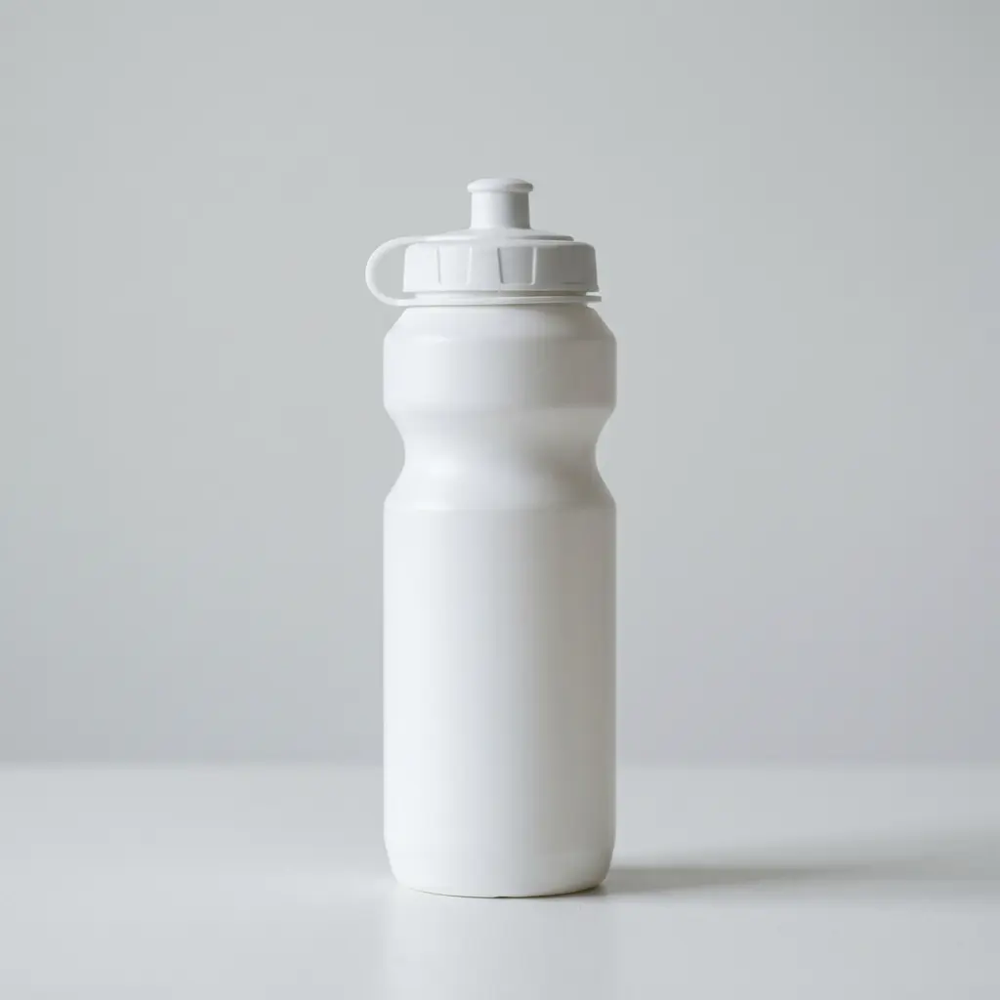
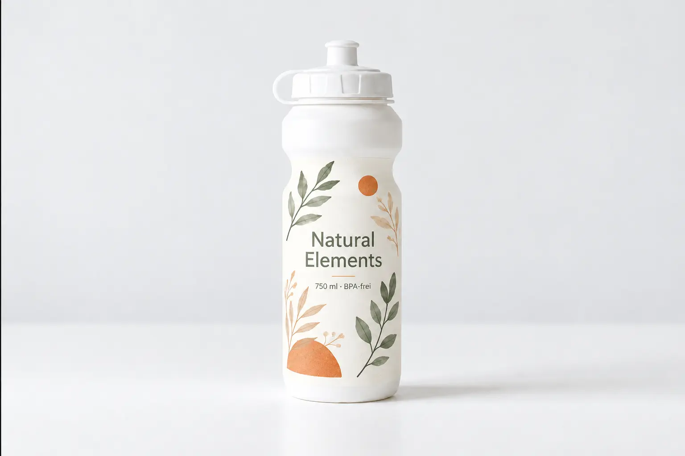
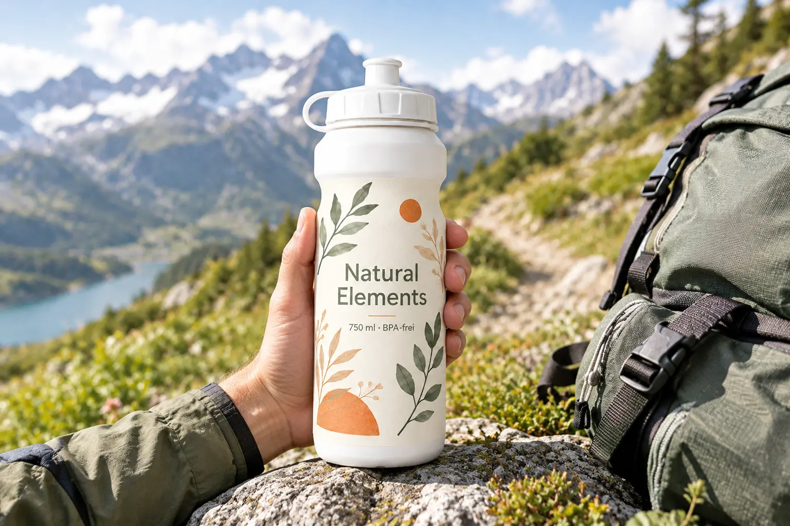
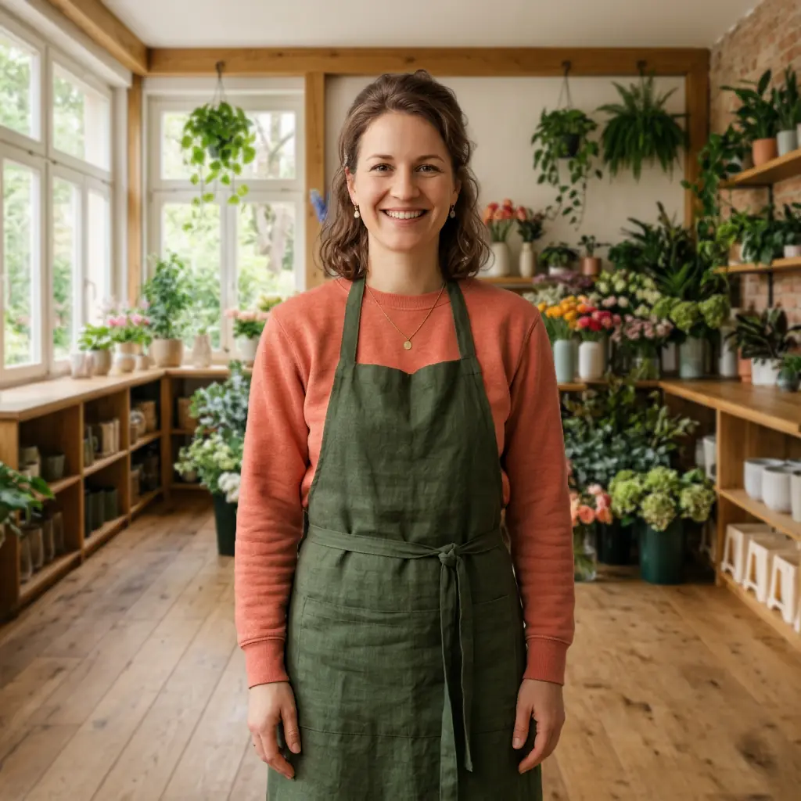
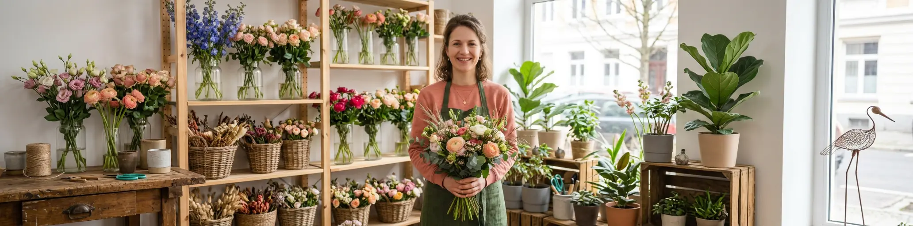
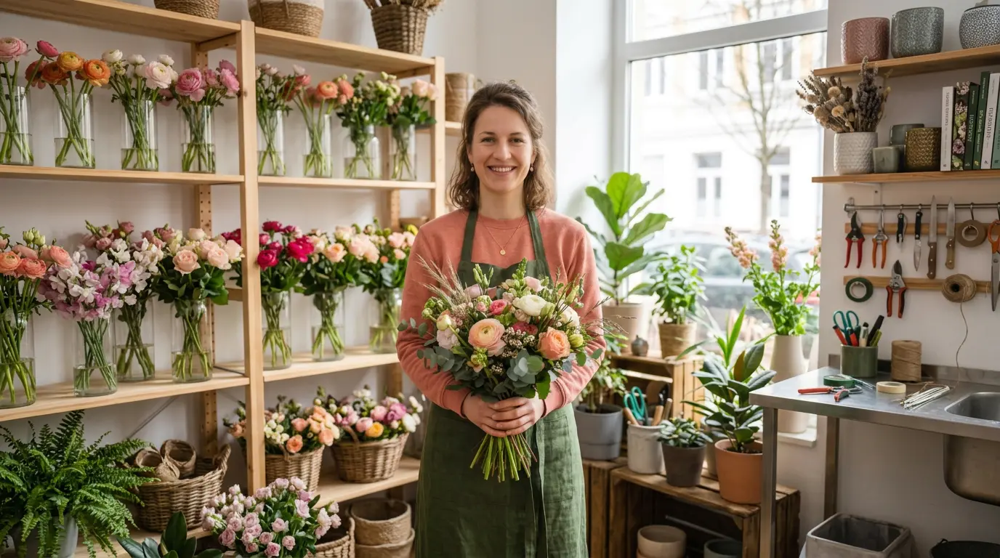

KI &
Creative Workflows
Kreativität trifft Technologie.
Ich verbinde klassische Mediengestaltung mit generativer KI. Von der Bildentwicklung über Produktvisualisierungen und Vektorgrafiken bis hin zu vollständigen Werbekonzepten nutze ich KI als ergänzendes Werkzeug im kreativen Gestaltungsprozess.
Einblicke in Projekte, Experimente und KI-gestützte Gestaltungsprozesse.
Kampagnen & Werbegestaltung
Recruiting · Social Media · Anzeigenformate
12 Motive
Kampagnen & Werbegestaltung
Recruiting · Social Media · Anzeigenformate


Produktvisualisierung & Video
Produktdesign · Werbewelten · Bewegtbild
16 Medien
Produktvisualisierung & Video
Produktdesign · Werbewelten · Bewegtbild
Produktinszenierung
Ein neutrales Ausgangsprodukt in unterschiedlichen Alltags-, Sport- und Werbesituationen.

AusgangsproduktProduktentwicklung & Werbewelten
Vom neutralen Ausgangsprodukt über die Designentwicklung bis zur Inszenierung in unterschiedlichen Werbewelten.




Textanpassung & KI-Werbevideo
Von der gezielten Überarbeitung der Produktbeschriftung bis zur animierten Werbeszene.


Bildgenerierung & Personenkonsistenz
Referenzbilder · Personenvariationen · Formate
23 Motive
Bildgenerierung & Personenkonsistenz
Referenzbilder · Personenvariationen · Formate
Floristik-Keyvisuals
Gezielte Variation von Kleidung, Umgebung und Personen. Wähle eine Variante direkt in der jeweiligen Kachel.
Virtuelle Anprobe

Blickrichtung

Kontext & Tätigkeit

Personenaustausch

Hintergrundwechsel

Formatadaption
Ein Keyvisual in drei unterschiedlichen Seitenverhältnissen.


Bildbearbeitung & Compositing
Retusche · Bilderweiterung · Raumgestaltung
6 Motive
Bildbearbeitung & Compositing
Retusche · Bilderweiterung · Raumgestaltung
Raumgestaltung
Vom Wohnzimmer zum Schlafzimmer – Erhaltung der Raumstruktur.
Wohnzimmer16:9 · Platzhalter
Schlafzimmer16:9 · Platzhalter
Bildbearbeitung
Ausgewählte Beispiele für Integration und Erweiterung.
Café-Szene4:3 · Platzhalter
Generative Erweiterung16:9 · Platzhalter
Retusche – Original4:3 · Platzhalter
Retusche – Bearbeitet4:3 · Platzhalter
Vektorgrafiken & Illustrationen
Illustrationen · Muster · Stilvariationen
5 Motive
Vektorgrafiken & Illustrationen
Illustrationen · Muster · Stilvariationen
Illustration und Gestaltung
Generative Vektorgrafiken und kreative Weiterbearbeitung.
Blumenstrauß – Stilvarianten1:1 · Platzhalter
Vaporwave16:9 · Platzhalter
Vektor-Compositing16:9 · Platzhalter
Weihnachtskarte4:5 · Platzhalter
Rapportmuster1:1 · Platzhalter
Prompt Engineering & Modellvergleiche
Prompt-Optimierung · Farbsteuerung · KI-Modelle
12 Motive
Prompt Engineering & Modellvergleiche
Prompt-Optimierung · Farbsteuerung · KI-Modelle
Produktdesign – Modellvergleich
Identischer Prompt, unterschiedliche Ergebnisse.
Firefly Image 51:1 · Platzhalter
Nano Banana 2.11:1 · Platzhalter
GPT Image 2.5 Flare1:1 · Platzhalter
GPT Image 2.5 Sunburst1:1 · Platzhalter
Textilumfärbung
Vergleich von Pantone- und HEX-Farbvorgaben.
Firefly · Pantone4:5 · Platzhalter
FLUX · Pantone4:5 · Platzhalter
Nano Banana · Pantone4:5 · Platzhalter
Grok · Pantone4:5 · Platzhalter
Firefly · HEX4:5 · Platzhalter
FLUX · HEX4:5 · Platzhalter
Nano Banana · HEX4:5 · Platzhalter
Grok · HEX4:5 · Platzhalter
Software & Werkzeuge
Die gezeigten Projekte stammen aus meiner KI-Weiterbildung und eigenen Gestaltungsübungen. KI-generierte Inhalte werden entsprechend gekennzeichnet.